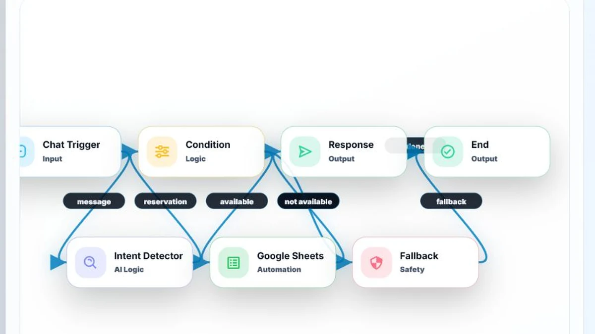

Interactive AI Workflow Project
AI Flow Puzzle
A live browser experience that turns chatbot workflow design into an interactive logic challenge with scenarios, configurable nodes, validation feedback and export tools.
HTML5CSS3Vanilla JavaScriptDOM & SVG APIsRule-Based Validation

Overview & Problem
Making workflow thinking visible through interaction.
A live n8n-inspired browser experience demonstrating chatbot flow structure, node validation, fallback paths and user journey thinking.
Chatbot workflows can be difficult to communicate through static diagrams alone. AI Flow Puzzle turns triggers, intent paths, branching, responses, fallback safety and automation steps into an interactive browser experience.
The project is designed as a portfolio demonstration rather than a production chatbot platform. Users can build, inspect, validate and simulate different workflow structures directly in the browser.
My Role
Solo Project
AI Flow Designer & Frontend DeveloperI designed the scenarios, node vocabulary, required workflow paths, validation rules, bilingual interface and browser-side implementation. The project combines conversational-flow thinking with frontend interaction design.
Interaction & Node System
A configurable workflow board built around clear functional groups.
Users choose a scenario, add nodes from a palette, position them with pointer controls and connect a source to a target. SVG Bézier paths visualize the graph, while Blank, Happy Path and Full Solution templates support different starting points.
Input
Chat Trigger · Intent Detector
Logic
Condition · Route Switch
Knowledge / Reasoning
Knowledge Base · LLM Reasoning
Automation
Google Sheets · CRM Update · Email Notify
Safety
Fallback · Human Handoff
Output
Response · End
The simulated run, execution log, hints, reset and JSON import/export make the structure inspectable. Nodes represent workflow concepts and do not call external services.
LLM Reasoning represents a conceptual reasoning step inside the workflow; it does not execute a real LLM call.
Three Workflow Scenarios
Different goals, paths and safety decisions.
Joyday Reservation Bot
- Goal
- Handle a reservation request, check availability, record it and respond.
- Main path
- Trigger → Intent → Condition → Sheets → Response → End
- Fallback / safety
- Condition → Fallback → End
Enterprise Support Bot
- Goal
- Route a support request through trusted context and a response path.
- Main path
- Trigger → Intent → Router → Knowledge Base → LLM Reasoning → Response → End
- Fallback / safety
- Router → Fallback or Human Handoff → End
Fictional workflow scenario created for this interactive demonstration.
Lead Capture Automation
- Goal
- Capture a sales request, record the lead, notify the team and respond.
- Main path
- Trigger → Intent → CRM → Email → Response → End
- Fallback / safety
- Intent → Fallback → End
Validation & Scoring
Rule-based feedback with explicit boundaries.
A browser-side rule-based validation system checks required node types and required type-to-type connections. Missing nodes and connections are reported, while duplicate and self-links are prevented.
Successful and incomplete flows receive simulated feedback across Logic, Automation, UX, Safety and Efficiency.
- Logic
- Automation
- UX
- Safety
- Efficiency
Technical Implementation
Vanilla browser APIs, explicit state and portable exports.
The application uses closure-scoped browser state for scenarios, nodes, links, selection, validation and run status. Nodes use percentage-based positioning, while connections are rendered as SVG Bézier paths between DOM elements.
JSON import/export includes the scenario, nodes, configuration, coordinates, connections and quality summary. Canvas, FileReader, Blob downloads, Clipboard and Local Storage support additional browser-side tools.
- HTML5
- CSS3
- Vanilla JavaScript
- DOM APIs
- Pointer Events
- SVG Paths
- Canvas API
- JSON Serialization
- FileReader
- Blob Downloads
- Clipboard API
- Local Storage is used for score only.
- Responsive Design
- Inter
- Boxicons
JSON export shape
{
"scenario": "joyday",
"nodes": [{ "type": "trigger", "config": {}, "position": { "x": 8, "y": 42 } }],
"connections": [{ "from": "node-id", "to": "node-id", "label": "message" }],
"quality": { "logic": 100, "automation": 69, "ux": 90, "safety": 80, "efficiency": 100 }
}Testing, Iteration & Limitations
Designed for repeated exploration across input methods and screen sizes.
Incomplete-flow feedback, templates, hints, reset and repeated validation let users iterate without leaving the page. The interface supports EN/TR, dark/light themes, responsive breakpoints and mouse or touch pointer interaction.
Nodes can be selected and deleted with the keyboard, but their board position cannot currently be changed through keyboard controls.
Dense workflows remain usable but can require more careful positioning on small screens.
Result & Gallery
A live demonstration of workflow structure and fallback thinking.
The result is a live portfolio demonstration that makes chatbot workflow thinking visible, interactive and testable. It provides three scenarios, configurable nodes, rule-based feedback, quality scoring and export tools without requiring a backend.
The desktop builder with a complete Joyday workflow.
Successful validation with five quality dimensions.
Incomplete-flow feedback identifying a missing fallback path.
The responsive single-column experience at mobile width.
Related Projects
Continue through the conversational AI and product work.
Resume & Contact
Looking for clear workflow thinking and practical frontend execution?
Review my resume or get in touch to discuss AI design, conversational flows and software opportunities.